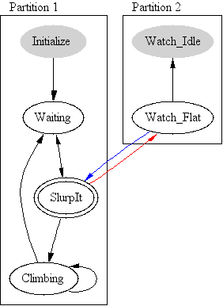

| Chap. 1 | Chap. 2 | Chap. 3 | Chap. 4 | Chap. 5 | Chap. 6 | App |
6.0: Reference |
A TMCALGO program may contain State definitions, Partition statements, quoted C code, so-called "Untimed Commands", or comments.
A State Definition takes the form
STATE <NAME> [ file-spec ] [ NoLog ] {
untimed-commands
timed-commands
}
The <NAME> must be unique.
The optional file-spec indicates that if possible, the commands for this state should be read for the specified file, which can be modified in realtime.
The optional keyword "NoLog" suppresses the log messages printed whenever the state is entered. This is useful for tight loops where logging would obscure useful information. [For the exceedingly curious: logging is suppressed by increasing the debug-level of the log message. Hence even NoLog state transitions can be logged by adding '-ll' to the command line options of the algorithm.]
A TMCALGO program may be broken up into two or more "partitions" by the use of the Partition statement. Each partition should include one or more States. Each new partition defines an independent state machine which operates in parallel with all the other partitions in the algorithm. Exactly one state from each partition is valid at any time.
Untimed Commands are probably misnamed; They are untimed only in the sense that they do not have an explicit TMCALGO time specification before them, but that alone is not enough to place a command in this category. This category is limited to two varieties of TMC commands which, by the nature of TMC, will have their "timing" determined by data flow considerations.
The two TMC varieties are:
When appearing at the top of a state definition, untimed commands will be executed at their TMC-determined rate whenever the state is valid, not just at the beginning. This is often used to implement state-specific watchdog functions:
State Laser_On {
{ if (Laser_Temp > 60) Validate Laser_Off; }
...
}
When appearing at the end of a state, these commands will be executed at their TMC-determined rate when the end of the state is reached and until another state in the partition is validated. This is often used to implement indefinite holds until some condition is met before advancing to the next state:
State Initialize {
...
depending on (OFF_THE_GROUND) { Validate Flight; }
}
When appearing in between timed commands, these commands are executed at most one time.
[ Since TMCALGO is not aware of the time dependencies of TMC, it cannot determine whether you have allowed enough time for the command to be executed. If the time you have allowed is less than the TMC-determined period for the command, it is possible that the command will not be executed at all. Be sure to leave enough time! ]
This approach can be used to spot-check status:
State Initialize {
...
+3 > Lamp On
+4 { if (!Lamp_Is_On)
msg( 1, "Lamp did not turn on!" );
}
+1 > ...
...
}
In this example, I have allowed 1 second to evaluate the check of Lamp_Is_On. Since that is the only variable referenced, it's TMC rate determines the rate of the statement, so if it's period is greater than 1 second (or rate less than 1 Hz), the warning could be missed.
Timed commands include all the types of commands which can appear within a state definition, including untimed commands. These commands may be proceeded by an optional time specification.
Times may be listed in seconds, minutes and seconds, or hours, minutes and seconds. The seconds and minutes need not be limited to values less than 60. Times listed with a '+' indicate the time delay between commands. Times listed without a '+' indicate that the following command should be executed at the specified time since the beginning of the state.
The possible commands are:
A <TEXT-COMMAND> is an experiment command in the same syntax as is used from the interactive command program. The command text is preceeded by a right angle bracket ( '>' ). In addition, an optional underscore character immediately preceeding the text (with no intervening whitespace) will suppress logging of this command. Together with the 'NoLog' keyword, this feature is useful to quiet logging of very repetetive operations.
This syntax does not allow for any variable substitution. For that purpose, see the library routines ci_sendcmd() and ci_sendfcmd().
Quoted strings in a command position are used to help document what the algorithm is doing when it might otherwise be unclear. During operation, algorithms usually display the next experiment command that is scheduled to be executed. If the next command is not an experiment command, say a TMC command or HOLD UNTIL, the default is to display nothing. If a quoted string is added to the algorithm, the text can be displayed, perhaps prompting the user to take some action:
"Waiting for SW Status 7";
Hold until (SWStat == 7);
Validate is used to activate an algorithm state. If the named state is in the same partition as the current state, processing in the current state terminates and subsequent commands are taken from the newly validated state. The named state may also be in another partition, in which case processing in the current state continues as before.
The validate command performs the same function as the TMC command of the same name. From an algorithm point of view
Validate Foo;
Is equivalent to:
{ Validate Foo; }
but the former is slightly more efficient.
HOLD UNTIL provides a shorthand syntax for introducing a variable delay into a state. With this syntax, a separate state must be introduced, which often makes the flow of the algorithm more difficult to follow. The syntax is:
HOLD UNTIL [ VALID ] <PARENSTAT> timeout
A simple example might be:
Hold until (SWStat == 5);
This will suspend execution of timed commands in the current state until the specified condition is met. Untimed commands at the top of the state will continue to be executed. You may also wait for a state or states to be validated:
Hold until valid (OFF_THE_GROUND, LASER_ON);
This will wait until both states OFF_THE_GROUND and LASER_ON are valid at the same time.
In both these cases, the degenerate timeout clause ';' is used which indicates that the algorithm should wait forever for the condition to be met. The options for timeout include:
';'
OR time ';'
OR time ELSE timed-command
If the time specified elapses and the condition is not met, timed command execution in the state is resumed and the ELSE clause, if present, is executed:
> Lamp On
Hold until ( convert( LM_RF ) > 3.2 ) or 45
else { msg( 1, "Lamp Failed to light" ); }
HOLD [ AND VALIDATE ] provides a generic hold capability similar to HOLD UNTIL without any explicit reference to TMC code that would require compilation. This makes it possible to use this syntax in Runtime Command Files.
The simplest form of this statement is:
HOLD;
This causes the current state and partition to hold indefinitely until a matching RESUME statement is executed from another partition. In practice, this means that each partition using this form of HOLD needs a shadow partition to provide waiting states which can issue the appropriate RESUME statements.
The drawing at left is a graphical representation of the
partitions and states in a simple algorithm. Partition 0 contains
the main processing states while Partition 1 provides
"Watch" functions. The "SlurpIt" state
is a dynamically modifiable state, and is expected to include
HOLD statements. The "Watch_Flat"
state is statically programmed to wait for a specific condition
and then issue the command Resume SlurpIt;.
In order for this arrangement to work, SlurpIt will need to
Validate Watch_Flat before issuing the
Hold. This gives rise to a potential race
condition; if Watch_Flat issues its Resume
before SlurpIt issues its Hold, SlurpIt will
be left waiting indefinitely. This is where the form
Hold and Validate becomes useful. If the
command is written:
Hold and Validate Watch_Flat;
the calling state will be marked as holding before Watch_Flat is validated, effectively eliminating any race condition.
As with the other Hold syntaxes, a
Hold [ and Validate ] statement may include a
timeout specification. Of course it is up
to the programmer to determine whether the timeout is more
appropriate in the holding state or the watching state.
The Resume statement is used in
conjunction with any of the Hold
statements. Resume's single argument
is the name of the state that should be resumed. If the
designated state is currently holding, the hold condition
will be marked as succeeding, with processing continuing
at the following statement. If the state is not holding,
a diagnostic message is logged, but no other action is
taken.
The optional file-spec in a State definition specifies the name of a file from which commands will be read. The quoted filename may be followed by a parenthesized list of states you wish to make available for runtime validation from the specified file. By default, all the states defined in TMCALGO are available, so this feature is rarely needed.
The commands listed within the state are default commands which are executed only if the specified file is not found or contains a syntax error. An exception to this is that untimed commands appearing at the top of the state definition will be executed. This means that you may be able to provide a standard, compiled exit condition for the state without requiring a separate watchdog partition.
The syntax of the runtime command files is a subset of the TMCAlgo syntax. The commands in the file are the contents of a single state, so none of the syntaxes involved with defining states or partitions are supported. Basically, the syntax is limited to timed commands except that "Hold Until" and untimed commands are not allowed. That leaves:
You can validate any state in the algorithm, including states in other partitions. If you want to validate a state defined in another .tmc file, you will have to include the state name in the list of allowed states following the file-spec in the state definition.
When the state is first validated, the program attempts to open and parse the specified file. If the file does not exist or there is a syntax error, any errors are reported to the log and the default commands are used. Otherwise the default commands are ignored and the commands in the file are executed. Whenever the state is re-validated, the status of the file is checked and if the file is unchanged, it does not need to be re-read. If the file has changed or has been removed, it is re-evaluated.
| Chap. 1 | Chap. 2 | Chap. 3 | Chap. 4 | Chap. 5 | Chap. 6 | App |
Return to Manuals Guide. Written by Norton T. Allen
| last updated: Thu Jan 2 10:52:02 2003 | webmaster@huarp.harvard.edu |
| Copyright 2002 by the President and Fellows of Harvard College | |